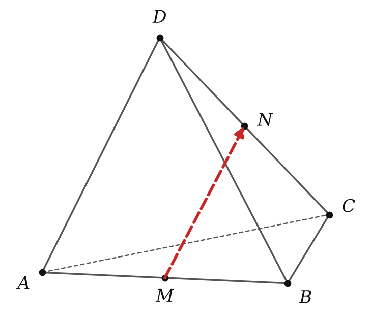

Теория
Векторы можно складывать, вычитать и умножать на числа — почти как обычные числа, но с учётом направления. Все правила такие же, как в планиметрии: любые два вектора, отложенные от одной точки, лежат в одной плоскости, и в этой плоскости работают знакомые построения.
Сложение: правило треугольника

Чтобы сложить векторы a и b, отложим от произвольной точки A вектор AB = a, а от точки B — вектор BC = b. Вектор AC называется суммой векторов a и b: a + b = AC.
Сумма не зависит от того, от какой точки A начали построение (если начать от другой точки, весь треугольник просто сдвинется). Главная формула, которую нужно помнить: для любых трёх точек A, B, C пространства AB + BC = AC. Читается как маршрут: «из A в B, потом из B в C — всё равно что сразу из A в C».
Правило параллелограмма

Если векторы a и b не коллинеарны, отложим их от одной точки: AB = a, AD = b, и достроим параллелограмм ABCD. Тогда a + b = AC — диагональ, выходящая из общего начала. Это то же правило треугольника: AD = BC, поэтому AB + AD = AB + BC = AC.
Свойства сложения (для любых векторов): a + b = b + a (переместительный закон); (a + b) + c = a + (b + c) (сочетательный закон); a + 0 = a.
Сочетательный закон. Отложим AB = a, BC = b, CD = c. Тогда (a + b) + c = (AB + BC) + CD = AC + CD = AD, а a + (b + c) = AB + (BC + CD) = AB + BD = AD. ∎
Вычитание векторов
Разностью векторов a и b называется такой вектор, сумма которого с b равна a: b + (a − b) = a.

Построение: отложим от одной точки O векторы OA = a и OB = b. Тогда a − b = BA: ведь OB + BA = OA. Запоминалка: OA − OB = BA — «из конца вычитаемого в конец уменьшаемого».
Вектор, противоположно направленный вектору a и имеющий ту же длину, называется противоположным и обозначается −a. Например, −AB = BA. Разность можно заменить сложением: a − b = a + (−b).
Самая частая ошибка — перепутать направление разности. OA − OB = BA, а не AB. Проверка: OB + BA = OA — сходится.
Сумма нескольких векторов: правило многоугольника

Несколько векторов складывают по очереди: к сумме первых двух прибавляют третий и т. д. Удобно откладывать их «цепочкой»: каждый следующий — от конца предыдущего. Тогда сумма — вектор из начала первого в конец последнего:
Для любых точек A₁, A₂, …, An пространства: A₁A₂ + A₂A₃ + … + Aₙ₋₁Aₙ = A₁Aₙ.
В пространстве ломаная может не лежать в одной плоскости — правило всё равно работает. А если ломаная замкнута (последняя точка совпала с первой), сумма равна 0: например, AB + BC + CA = AA = 0.
Умножение вектора на число

Произведением ненулевого вектора a на число k называется вектор ka, длина которого равна |k| · |a|, причём ka ↑↑ a при k ≥ 0 и ka ↑↓ a при k < 0. Произведение нулевого вектора на любое число — нулевой вектор.
Из определения: ka и a всегда коллинеарны; 0 · a = 0; (−1) · a = −a. Свойства — как у чисел: (kl)a = k(la); (k + l)a = ka + la; k(a + b) = ka + kb. Поэтому векторные выражения можно раскрывать по обычным правилам: скобки, приведение подобных.
Середина отрезка. Если M — середина отрезка AB, а O — любая точка, то OM = ½(OA + OB). Почему: OM = OA + AM и OM = OB + BM; складываем: 2OM = OA + OB + (AM + BM), а AM и BM противоположны, их сумма 0.
|a + b| ≠ |a| + |b| в общем случае! Длины складываются, только если векторы сонаправлены. Например, у противоположно направленных векторов длины 3 и 5 сумма имеет длину 2.
Не путай ka и a + k: к вектору нельзя прибавить число. Выражение «a + 2» бессмысленно, а 2a — вектор.
Разбор примеров
Дан параллелепипед ABCDA₁B₁C₁D₁. Найди вектор, равный сумме AB + B₁C₁ + DD₁.
Заменим векторы равными так, чтобы получилась цепочка: B₁C₁ = BC (грань BB₁C₁C — параллелограмм), DD₁ = CC₁. Тогда AB + BC + CC₁ = AC₁ по правилу многоугольника.
Даны точки A, B, C, D. Упрости: DA + AB − CB.
−CB = BC. Получаем цепочку DA + AB + BC = DC.
Ребро куба ABCDA₁B₁C₁D₁ равно 2. Найди |AB + AD + AA₁| и |AB − A₁D₁|.
AB + AD = AC (параллелограмм), AC + AA₁ = AC + CC₁ = AC₁. Длина — диагональ куба: 2√3.
A₁D₁ = AD, и AB − AD = DB. Длина — диагональ квадрата: 2√2.

В тетраэдре ABCD точки M и N — середины рёбер AB и CD. Докажи, что MN = ½(AD + BC).
Запишем MN двумя маршрутами: MN = MA + AD + DN и MN = MB + BC + CN. Сложим: 2MN = (MA + MB) + (AD + BC) + (DN + CN).
M — середина AB, поэтому MA и MB противоположны: их сумма 0. Так же DN + CN = 0. Значит, 2MN = AD + BC, т. е. MN = ½(AD + BC). ∎
Точка M лежит на отрезке AB, AM : MB = 1 : 3. Найди числа k и m, для которых AM = kAB и BM = mAB.
AB состоит из 4 равных частей, AM — одна из них, и AM ↑↑ AB: k = ¼. BM — три части, но BM ↑↓ AB: m = −¾.
GeoGebra
- u=Vector((1,0,2))
вектор u - w=Vector((0,3,1))
вектор w - u+w
сумма: сравни с диагональю параллелограмма, построенного на u и w - u-w
разность - k=Slider(-3,3,0.5)
ползунок k - k*u
вектор ku: подвигай k и посмотри, когда он меняет направление
Задачи урока
Реши в тетради, к каждой задаче — чертёж. Разберём на занятии.
Тест к уроку
Домашнее задание
Задачи Д1–Д6 ниже. Выучить правила треугольника, параллелограмма и многоугольника, построение разности и определение произведения вектора на число. Повторить формулу середины отрезка и её доказательство.